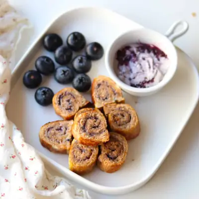

Blueberry French Toast Roll Ups

Ingredients
- 1/2 cup mascarpone cheese (softened, see note)
- 1/2 cup blueberries
- 1 tablespoon lemon zest (optional)
- 8 slices soft sandwich bread
- 2 eggs
- 2 tablespoons milk
- 1/2 teaspoon cinnamon
- 1-2 tablespoons butter (for cooking)
Steps
- Prepare the blueberry filling. Blend the blueberries until smooth. Gradually stir the blueberry purée (and lemon zest if using) into the softened mascarpone until thick, creamy, and spreadable. You may not need all the purée. See note
- Flatten the bread. Trim the crusts, if desired. Using a rolling pin, gently flatten each slice of bread to about ⅛–¼ inch thick.
- Fill and roll. Spread about 1–2 tablespoons of the blueberry mascarpone filling onto each slice, leaving a small border around the edges. Roll tightly into a log.
- Prepare the egg mixture. In a shallow dish, whisk together the eggs, milk, and cinnamon until well combined.
- Dip the roll-ups. Dip each roll-up into the egg mixture, turning to coat all sides. Avoid soaking for too long to prevent sogginess.
- Cook until golden. Melt butter in a large nonstick skillet over medium-low heat. Place the roll-ups seam-side down and cook, turning occasionally, until golden brown on all sides and the egg coating is fully cooked.
- Serve. Enjoy warm with any leftover blueberry mascarpone filling for dipping!
Recipe by Min Kwon · Kidfriendly Meals, from MJ and Hungryman. Saved here for personal use; the original has the full notes, tips and photos. Open original